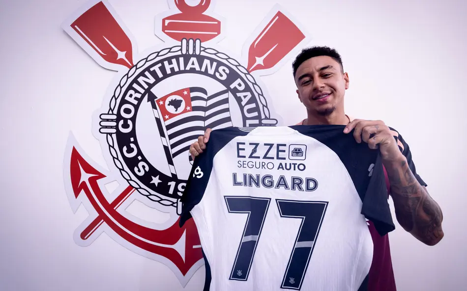

O Corinthians oficializou a chegada de Jesse Lingard para a temporada 2026. O meia-atacante inglês, ex-Manchester United e Nottingham Forest, assinou contrato de dois anos e chega para ser um dos grandes nomes do elenco do Timão.
“Do Reino à Favela” é a campanha que apresenta Lingard ao torcedor corintiano. O vídeo oficial mostra a trajetória do jogador desde os gramados da Inglaterra até os campos de várzea e as quebradas de São Paulo, simbolizando a conexão entre o futebol de elite e a paixão da Fiel nas periferias. É o Timão mostrando que o mundo inteiro pode entender o que é ser Corinthians.
A contratação de Lingard já é considerada um marco na história recente do clube. A campanha de marketing “Do Reino à Favela” viralizou nas redes sociais em menos de 24 horas, com milhões de visualizações e grande repercussão internacional. A Fiel abraçou o inglês como um dos seus e já canta o nome dele nas arquibancadas.